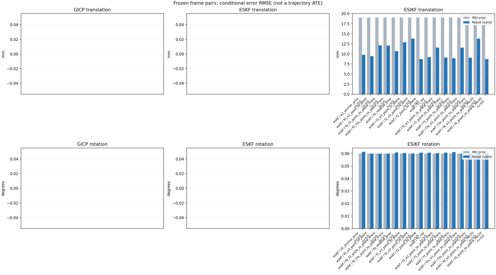

20261015_112940_pitch_up · depth=disparity_cache · cache=caebdbbc1e013185c8aa
模型视差：/home/ubuntu22/slam/SIO_SLAM/models/tensorrt/disp_896x448_fp16.plan；engine SHA256=604cf6ac1f705c877260711730dd5d2d58c2a21f3020c03c668401ef7fb1e768。输入为生产裁剪与光照处理后的 RGB 0..255；此实验使用原始浮点像素视差，不应用完整前端的邻域视差后处理。
原始 ONNX SHA256：e9f49736a65d68d06681add463866b6defdf78fdd7f4f50f6cc941b682fdc0bc。
代价体图改写验证：ONNX Runtime 固定随机特征输入，最大绝对误差 0；该项检查图改写，完整模型精度仍需由录制数据评估。
配准代码版本：744ac2d993ae629b0cc44a3b1d995e04ab4fad48；观测生成版本：744ac2d993ae629b0cc44a3b1d995e04ab4fad48。
固定图像对与纯 IMU 先验；ESKF 回放固定 GICP 观测，ESIKF 直接读取点云。真值只用于此报告。
同时查看 converged 与 solver_status：上游默认 Stereo 在 max_iter / stopped_at_minimum 时也可能置 converged=true。valid 表示输入检查通过，不表示精度提升。欧氏 GICP 未提供独立的点距 RMSE，该列显示 NaN。
误差按每对图像的锚点计算，单位 m / degrees。此处 RMSE 不是全序列 ATE；末帧受同一锚点条件约束。NIS 与条件马氏距离是诊断量，少量相关图像对不能用于宣称协方差已校准。
全部指标 CSV · R / P 矩阵 CSV · Stereo 求解逐轮 CSV · ESIKF 逐轮轨迹 CSV · 末轮 H / R / K_pose 矩阵 CSV · 配置快照 · 矢量图
unflagged 排除纯惯性先验平移误差超过 50 mm 的图像对；whitened 为误差按协方差白化后的每自由度均值，协方差与实际误差相符时约为 1。prior_whitened 用真值误差只检验先验 P；NIS 为 ESIKF 首轮 rᵀ(P+R)⁻¹r，不用真值，检验的是 P+R 的总量，单靠它分不开 P 与 R，偏差、错误对应和线性化误差也会抬高它。观测方差超过先验方差 1e+04 倍的方向视为不可观，从 NIS 及其自由度中去掉（nis_dof）。一致时 nis_per_dof 均值约 1、nis_over_chi2_median 中位数约 1；帧对少且共享序列，超出 95% 分位的比例只作参考。
| stage | method | variant | valid | total | result_translation_rmse_m | result_rotation_rmse_deg | result_translation_median_m | result_rotation_median_deg | result_translation_rmse_unflagged_m | result_rotation_rmse_unflagged_deg | improved_translation | improved_rotation | posterior_whitened_by_P_rot_mean | posterior_whitened_by_P_trans_mean | prior_whitened_by_P_rot_mean | prior_whitened_by_P_trans_mean | nis_per_dof_mean | nis_over_chi2_median_median | nis_exceeds_chi2_95_fraction |
|---|---|---|---|---|---|---|---|---|---|---|---|---|---|---|---|---|---|---|---|
| esikf | esikf | e2_anchor_prior | 5 | 5 | 0.0097735 | 0.061296 | 0.008705 | 0.027454 | 0.0097735 | 0.061296 | 2 | 2 | 321.65 | 332.16 | 279.71 | 8.6323 | 10.643 | 6.4123 | 0.8 |
| esikf | esikf | f0_e3_point_to_point | 5 | 5 | 0.0094252 | 0.059796 | 0.0086125 | 0.028314 | 0.0094252 | 0.059796 | 3 | 2 | 190.41 | 3.9924 | 189.29 | 0.02985 | 0.075412 | 0.011274 | 0 |
| esikf | esikf | f0_f3_point_to_plane_trans | 5 | 5 | 0.012134 | 0.059787 | 0.010824 | 0.02829 | 0.012134 | 0.059787 | 1 | 2 | 190.55 | 79.772 | 189.29 | 0.02985 | 0.41657 | 0.059029 | 0 |
| esikf | esikf | f0_f3s_point_to_plane_trans | 5 | 5 | 0.012091 | 0.059768 | 0.010884 | 0.02833 | 0.012091 | 0.059768 | 1 | 0 | 189.29 | 78.861 | 189.29 | 0.02985 | 0.41657 | 0.059029 | 0 |
| esikf | esikf | f0_relative_prior | 5 | 5 | 0.010696 | 0.060765 | 0.0094472 | 0.028387 | 0.010696 | 0.060765 | 2 | 1 | 203.7 | 398.82 | 189.29 | 0.02985 | 9.4943 | 4.1994 | 0.8 |
| esikf | esikf | f2_e3_point_to_plane | 5 | 5 | 0.012889 | 0.06032 | 0.0063666 | 0.028315 | 0.012889 | 0.06032 | 5 | 2 | 290.9 | 8.2488 | 279.71 | 8.6323 | 0.66478 | 0.17599 | 0.2 |
| esikf | esikf | f2_e3_point_to_point | 5 | 5 | 0.01381 | 0.05991 | 0.0064429 | 0.028308 | 0.01381 | 0.05991 | 4 | 2 | 289.09 | 12.897 | 279.71 | 8.6323 | 0.18052 | 0.10305 | 0 |
| esikf | esikf | f2_point_to_plane | 5 | 5 | 0.0087087 | 0.060685 | 0.0053771 | 0.028556 | 0.0087087 | 0.060685 | 3 | 1 | 307 | 30.547 | 279.71 | 8.6323 | 17.121 | 14.685 | 0.8 |
| esikf | esikf | f2_ray | 5 | 5 | 0.0092349 | 0.060677 | 0.0059944 | 0.026667 | 0.0092349 | 0.060677 | 2 | 2 | 298.24 | 38.794 | 279.71 | 8.6323 | 11.965 | 7.9324 | 0.6 |
| esikf | esikf | f3_e3_point_to_plane_trans | 5 | 5 | 0.011573 | 0.060295 | 0.0064112 | 0.028241 | 0.011573 | 0.060295 | 4 | 2 | 291.01 | 7.3159 | 279.71 | 8.6323 | 2.3582 | 0.86027 | 0.4 |
| esikf | esikf | f3_point_to_plane_trans | 5 | 5 | 0.0091155 | 0.060722 | 0.0075856 | 0.027192 | 0.0091155 | 0.060722 | 1 | 2 | 309.97 | 39.737 | 279.71 | 8.6323 | 25.254 | 12.49 | 0.6 |
| esikf | esikf | f3_point_to_point_trans | 5 | 5 | 0.0089135 | 0.061049 | 0.006898 | 0.029934 | 0.0089135 | 0.061049 | 1 | 1 | 326.89 | 395.2 | 279.71 | 8.6323 | 3.9653 | 2.7952 | 0.4 |
| esikf | esikf | f3s_e3_point_to_plane_trans | 5 | 5 | 0.011556 | 0.059768 | 0.0064112 | 0.02833 | 0.011556 | 0.059768 | 4 | 0 | 279.71 | 7.3095 | 279.71 | 8.6323 | 2.3582 | 0.86027 | 0.4 |
| esikf | esikf | f3s_point_to_plane_trans | 5 | 5 | 0.009073 | 0.059768 | 0.0076051 | 0.02833 | 0.009073 | 0.059768 | 1 | 0 | 279.71 | 39.726 | 279.71 | 8.6323 | 25.254 | 12.49 | 0.6 |
| esikf | esikf | f4_e3_point_to_point_iter20 | 5 | 5 | 0.013792 | 0.059904 | 0.0064429 | 0.028308 | 0.013792 | 0.059904 | 4 | 2 | 289.09 | 12.852 | 279.71 | 8.6323 | 0.18052 | 0.10305 | 0 |
| esikf | esikf | f4_point_to_plane_iter20 | 5 | 5 | 0.0086931 | 0.060678 | 0.0053771 | 0.028556 | 0.0086931 | 0.060678 | 3 | 1 | 306.97 | 30.501 | 279.71 | 8.6323 | 17.121 | 14.685 | 0.8 |

| stage | case | method | variant | status | solver_status | inliers | converged | covariance_convention | covariance_from_hessian | fitness | registration_rmse_m | prior_trans_error_m | result_trans_error_m | prior_rot_error_deg | result_rot_error_deg | prior_flagged | R_rot_trace_rad2 | R_pos_trace_m2 | nis_regularized | posterior_whitened_by_P_rot | posterior_whitened_by_P_trans | prior_whitened_by_P_rot | prior_whitened_by_P_trans | nis_per_dof | nis_dof |
|---|---|---|---|---|---|---|---|---|---|---|---|---|---|---|---|---|---|---|---|---|---|---|---|---|---|
| esikf | static_start | esikf | e2_anchor_prior | updated | converged | 5193 | 1 | 1 | 0 | 0 | 0.00012006 | 0.0001625 | 0.0069246 | 0.00716 | 0 | 4.7347e-07 | 1.1074e-06 | nan | 15.425 | 0.2007 | 14.269 | 0.054454 | 7.7605 | 6 | |
| esikf | static_start | esikf | f0_relative_prior | updated | converged | 5193 | 1 | 1 | 0 | 0 | 0.00012006 | 0.00036317 | 0.0069246 | 0.007131 | 0 | 4.734e-07 | 1.1073e-06 | nan | 15.067 | 0.50467 | 14.093 | 0.0035198 | 7.5838 | 6 | |
| esikf | static_start | esikf | f2_point_to_plane | updated | converged | 5193 | 1 | 1 | 0 | 0 | 0.00012006 | 9.3779e-05 | 0.0069246 | 0.0069966 | 0 | 1.7996e-06 | 3.6563e-06 | nan | 14.607 | 0.039939 | 14.269 | 0.054454 | 3.4982 | 6 | |
| esikf | static_start | esikf | f2_ray | updated | converged | 5193 | 1 | 1 | 0 | 0 | 0.00012006 | 0.00018396 | 0.0069246 | 0.0069277 | 0 | 0.055292 | 4.6174e-05 | nan | 14.281 | 0.14828 | 14.269 | 0.054454 | 0.86331 | 3 | |
| esikf | static_start | esikf | f3_point_to_point_trans | updated | converged | 5335 | 1 | 1 | 0 | 0 | 0.00012006 | 0.0033603 | 0.0069246 | 0.0069897 | 0 | 0.45671 | 1.0664e-06 | nan | 14.524 | 104.94 | 14.269 | 0.054454 | 7.7008 | 3 | |
| esikf | static_start | esikf | f3_point_to_plane_trans | updated | converged | 5193 | 1 | 1 | 0 | 0 | 0.00012006 | 0.00027744 | 0.0069246 | 0.0069301 | 0 | 1.8 | 3.6546e-06 | nan | 14.291 | 0.35473 | 14.269 | 0.054454 | 1.6993 | 3 | |
| esikf | static_start | esikf | f0_f3_point_to_plane_trans | updated | converged | 5192 | 1 | 1 | 0 | 0 | 0.00012006 | 0.0015384 | 0.0069246 | 0.0069311 | 0 | 1.7905 | 3.6662e-06 | nan | 14.12 | 1.9817 | 14.093 | 0.0035198 | 0.38764 | 3 | |
| esikf | static_start | esikf | f3s_point_to_plane_trans | updated | converged | 5193 | 1 | 1 | 0 | 0 | 0.00012006 | 0.00027744 | 0.0069246 | 0.0069246 | 0 | 1.8 | 3.6546e-06 | nan | 14.269 | 0.35473 | 14.269 | 0.054454 | 1.6993 | 3 | |
| esikf | static_start | esikf | f0_f3s_point_to_plane_trans | updated | converged | 5192 | 1 | 1 | 0 | 0 | 0.00012006 | 0.0015384 | 0.0069246 | 0.0069246 | 0 | 1.7905 | 3.6662e-06 | nan | 14.093 | 1.9818 | 14.093 | 0.0035198 | 0.38764 | 3 | |
| esikf | static_start | esikf | f4_point_to_plane_iter20 | updated | converged | 5193 | 1 | 1 | 0 | 0 | 0.00012006 | 9.3779e-05 | 0.0069246 | 0.0069966 | 0 | 1.7996e-06 | 3.6563e-06 | nan | 14.607 | 0.039939 | 14.269 | 0.054454 | 3.4982 | 6 | |
| esikf | static_start | esikf | f2_e3_point_to_point | updated | converged | 5193 | 1 | 1 | 0 | 0 | 0.00012006 | 0.00011929 | 0.0069246 | 0.0069263 | 0 | 5.2635e-05 | 9.2117e-05 | nan | 14.278 | 0.054466 | 14.269 | 0.054454 | 0.0019379 | 3 | |
| esikf | static_start | esikf | f0_e3_point_to_point | updated | converged | 5193 | 1 | 1 | 0 | 0 | 0.00012006 | 0.00012001 | 0.0069246 | 0.0069265 | 0 | 5.2635e-05 | 9.2117e-05 | nan | 14.101 | 0.00378 | 14.093 | 0.0035198 | 0.0016819 | 3 | |
| esikf | static_start | esikf | f2_e3_point_to_plane | updated | converged | 5193 | 1 | 1 | 0 | 0 | 0.00012006 | 0.00011508 | 0.0069246 | 0.0069259 | 0 | 0.00010516 | 0.00013134 | nan | 14.275 | 0.050358 | 14.269 | 0.054454 | 0.022616 | 3 | |
| esikf | static_start | esikf | f3_e3_point_to_plane_trans | updated | converged | 5193 | 1 | 1 | 0 | 0 | 0.00012006 | 0.0001185 | 0.0069246 | 0.0069248 | 0 | 1.7997 | 0.00013134 | nan | 14.27 | 0.053397 | 14.269 | 0.054454 | 0.056937 | 3 | |
| esikf | static_start | esikf | f3s_e3_point_to_plane_trans | updated | converged | 5193 | 1 | 1 | 0 | 0 | 0.00012006 | 0.0001185 | 0.0069246 | 0.0069246 | 0 | 1.7997 | 0.00013134 | nan | 14.269 | 0.053397 | 14.269 | 0.054454 | 0.056937 | 3 | |
| esikf | static_start | esikf | f4_e3_point_to_point_iter20 | updated | converged | 5193 | 1 | 1 | 0 | 0 | 0.00012006 | 0.00011929 | 0.0069246 | 0.0069263 | 0 | 5.2635e-05 | 9.2117e-05 | nan | 14.278 | 0.054466 | 14.269 | 0.054454 | 0.0019379 | 3 | |
| esikf | sync_motion | esikf | e2_anchor_prior | updated | converged | 5498 | 1 | 1 | 0 | 0 | 0.00096706 | 0.002585 | 0.039675 | 0.040512 | 0 | 4.4922e-07 | 1.0824e-06 | nan | 478.82 | 45.649 | 447.02 | 2.1075 | 5.7156 | 6 | |
| esikf | sync_motion | esikf | f0_relative_prior | updated_not_converged | max_iterations | 5656 | 0 | 1 | 0 | 0 | 0.00096706 | 0.0089311 | 0.039675 | 0.039538 | 0 | 4.3773e-07 | 1.0496e-06 | nan | 434.16 | 390.62 | 434.87 | 0.0063357 | 2.7883 | 6 | |
| esikf | sync_motion | esikf | f2_point_to_plane | updated | converged | 5495 | 1 | 1 | 0 | 0 | 0.00096706 | 0.00098699 | 0.039675 | 0.039952 | 0 | 1.8435e-06 | 3.7346e-06 | nan | 460.06 | 2.5893 | 447.02 | 2.1075 | 23.404 | 6 | |
| esikf | sync_motion | esikf | f2_ray | updated | converged | 5492 | 1 | 1 | 0 | 0 | 0.00096706 | 0.00082944 | 0.039675 | 0.039896 | 0 | 0.011235 | 1.5142e-05 | nan | 457.04 | 1.7676 | 447.02 | 2.1075 | 26.92 | 3 | |
| esikf | sync_motion | esikf | f3_point_to_point_trans | updated | converged | 5476 | 1 | 1 | 0 | 0 | 0.00096706 | 0.0036021 | 0.039675 | 0.041675 | 0 | 0.44899 | 1.0824e-06 | nan | 514.55 | 96.714 | 447.02 | 2.1075 | 9.1876 | 3 | |
| esikf | sync_motion | esikf | f3_point_to_plane_trans | updated | converged | 5500 | 1 | 1 | 0 | 0 | 0.00096706 | 0.0035691 | 0.039675 | 0.041613 | 0 | 1.8153 | 3.702e-06 | nan | 501.18 | 38.137 | 447.02 | 2.1075 | 101.09 | 3 | |
| esikf | sync_motion | esikf | f0_f3_point_to_plane_trans | updated | converged | 5914 | 1 | 1 | 0 | 0 | 0.00096706 | 0.016294 | 0.039675 | 0.039746 | 0 | 1.6882 | 3.2544e-06 | nan | 437.34 | 217.16 | 434.87 | 0.0063357 | 1.6062 | 3 | |
| esikf | sync_motion | esikf | f3s_point_to_plane_trans | updated | converged | 5500 | 1 | 1 | 0 | 0 | 0.00096706 | 0.0035866 | 0.039675 | 0.039675 | 0 | 1.8116 | 3.7015e-06 | nan | 447.02 | 38.528 | 447.02 | 2.1075 | 101.09 | 3 | |
| esikf | sync_motion | esikf | f0_f3s_point_to_plane_trans | updated_not_converged | max_iterations | 5915 | 0 | 1 | 0 | 0 | 0.00096706 | 0.016187 | 0.039675 | 0.039675 | 0 | 1.6909 | 3.237e-06 | nan | 434.87 | 213.53 | 434.87 | 0.0063357 | 1.6062 | 3 | |
| esikf | sync_motion | esikf | f4_point_to_plane_iter20 | updated | converged | 5495 | 1 | 1 | 0 | 0 | 0.00096706 | 0.00098699 | 0.039675 | 0.039952 | 0 | 1.8435e-06 | 3.7346e-06 | nan | 460.06 | 2.5893 | 447.02 | 2.1075 | 23.404 | 6 | |
| esikf | sync_motion | esikf | f2_e3_point_to_point | updated | converged | 5513 | 1 | 1 | 0 | 0 | 0.00096706 | 0.00095447 | 0.039675 | 0.039693 | 0 | 4.9993e-05 | 9.0421e-05 | nan | 447.81 | 2.0798 | 447.02 | 2.1075 | 0.21705 | 3 | |
| esikf | sync_motion | esikf | f0_e3_point_to_point | updated | converged | 5499 | 1 | 1 | 0 | 0 | 0.00096706 | 0.0039157 | 0.039675 | 0.039692 | 0 | 4.9871e-05 | 8.9438e-05 | nan | 435.93 | 1.0911 | 434.87 | 0.0063357 | 0.032056 | 3 | |
| esikf | sync_motion | esikf | f2_e3_point_to_plane | updated | converged | 5513 | 1 | 1 | 0 | 0 | 0.00096706 | 0.00095056 | 0.039675 | 0.039691 | 0 | 0.00010621 | 0.00013332 | nan | 447.66 | 2.0389 | 447.02 | 2.1075 | 0.567 | 3 | |
| esikf | sync_motion | esikf | f3_e3_point_to_plane_trans | updated | converged | 5508 | 1 | 1 | 0 | 0 | 0.00096706 | 0.00093436 | 0.039675 | 0.039744 | 0 | 1.8184 | 0.0001336 | nan | 448.91 | 1.9621 | 447.02 | 2.1075 | 3.7787 | 3 | |
| esikf | sync_motion | esikf | f3s_e3_point_to_plane_trans | updated | converged | 5507 | 1 | 1 | 0 | 0 | 0.00096706 | 0.00093435 | 0.039675 | 0.039675 | 0 | 1.8186 | 0.00013361 | nan | 447.02 | 1.962 | 447.02 | 2.1075 | 3.7787 | 3 | |
| esikf | sync_motion | esikf | f4_e3_point_to_point_iter20 | updated | converged | 5513 | 1 | 1 | 0 | 0 | 0.00096706 | 0.00095447 | 0.039675 | 0.039693 | 0 | 4.9993e-05 | 9.0421e-05 | nan | 447.81 | 2.0798 | 447.02 | 2.1075 | 0.21705 | 3 | |
| esikf | main_motion | esikf | e2_anchor_prior | updated_not_converged | max_iterations | 18083 | 0 | 1 | 0 | 0 | 0.0064081 | 0.008705 | 0.02833 | 0.027454 | 0 | 1.3351e-07 | 8.7436e-07 | nan | 281.66 | 179.85 | 253.27 | 17.947 | 3.9008 | 6 | |
| esikf | main_motion | esikf | f0_relative_prior | updated_not_converged | max_iterations | 18097 | 0 | 1 | 0 | 0 | 0.0064081 | 0.0094472 | 0.02833 | 0.028387 | 0 | 1.3314e-07 | 8.7091e-07 | nan | 229.81 | 180.27 | 222.66 | 0.049933 | 3.7431 | 6 | |
| esikf | main_motion | esikf | f2_point_to_plane | updated | converged | 17977 | 1 | 1 | 0 | 0 | 0.0064081 | 0.0053771 | 0.02833 | 0.028556 | 0 | 8.732e-07 | 3.6961e-06 | nan | 291.11 | 40.169 | 253.27 | 17.947 | 13.09 | 6 | |
| esikf | main_motion | esikf | f2_ray | updated | converged | 18053 | 1 | 1 | 0 | 0 | 0.0064081 | 0.0097195 | 0.02833 | 0.026667 | 0 | 0.010781 | 2.0258e-05 | nan | 249.61 | 80.358 | 253.27 | 17.947 | 23.204 | 3 | |
| esikf | main_motion | esikf | f3_point_to_point_trans | updated_not_converged | max_iterations | 18000 | 0 | 1 | 0 | 0 | 0.0064081 | 0.0069672 | 0.02833 | 0.029934 | 0 | 0.13584 | 8.9328e-07 | nan | 334.97 | 291.87 | 253.27 | 17.947 | 0.42801 | 3 | |
| esikf | main_motion | esikf | f3_point_to_plane_trans | updated | converged | 18006 | 1 | 1 | 0 | 0 | 0.0064081 | 0.0075856 | 0.02833 | 0.027192 | 0 | 0.86706 | 3.6462e-06 | nan | 266.09 | 42.865 | 253.27 | 17.947 | 9.8507 | 3 | |
| esikf | main_motion | esikf | f0_f3_point_to_plane_trans | updated | converged | 18040 | 1 | 1 | 0 | 0 | 0.0064081 | 0.010824 | 0.02833 | 0.02829 | 0 | 0.87946 | 3.5771e-06 | nan | 224.6 | 64.072 | 222.66 | 0.049933 | 0.046554 | 3 | |
| esikf | main_motion | esikf | f3s_point_to_plane_trans | updated | converged | 18008 | 1 | 1 | 0 | 0 | 0.0064081 | 0.0076051 | 0.02833 | 0.02833 | 0 | 0.86632 | 3.6506e-06 | nan | 253.27 | 43.098 | 253.27 | 17.947 | 9.8507 | 3 | |
| esikf | main_motion | esikf | f0_f3s_point_to_plane_trans | updated_not_converged | max_iterations | 18041 | 0 | 1 | 0 | 0 | 0.0064081 | 0.010884 | 0.02833 | 0.02833 | 0 | 0.87834 | 3.5934e-06 | nan | 222.66 | 64.873 | 222.66 | 0.049933 | 0.046554 | 3 | |
| esikf | main_motion | esikf | f4_point_to_plane_iter20 | updated | converged | 17977 | 1 | 1 | 0 | 0 | 0.0064081 | 0.0053771 | 0.02833 | 0.028556 | 0 | 8.732e-07 | 3.6961e-06 | nan | 291.11 | 40.169 | 253.27 | 17.947 | 13.09 | 6 | |
| esikf | main_motion | esikf | f2_e3_point_to_point | updated | converged | 18097 | 1 | 1 | 0 | 0 | 0.0064081 | 0.0064429 | 0.02833 | 0.028308 | 0 | 1.4833e-05 | 7.1995e-05 | nan | 257.08 | 19.351 | 253.27 | 17.947 | 0.018079 | 4 | |
| esikf | main_motion | esikf | f0_e3_point_to_point | updated_not_converged | max_iterations | 18086 | 0 | 1 | 0 | 0 | 0.0064081 | 0.0086125 | 0.02833 | 0.028314 | 0 | 1.4851e-05 | 7.2567e-05 | nan | 224.84 | 1.9457 | 222.66 | 0.049933 | 0.0065854 | 4 | |
| esikf | main_motion | esikf | f2_e3_point_to_plane | updated | converged | 18100 | 1 | 1 | 0 | 0 | 0.0064081 | 0.0063666 | 0.02833 | 0.028315 | 0 | 5.0016e-05 | 0.00012642 | nan | 256.18 | 18.404 | 253.27 | 17.947 | 0.0958 | 3 | |
| esikf | main_motion | esikf | f3_e3_point_to_plane_trans | updated | converged | 18096 | 1 | 1 | 0 | 0 | 0.0064081 | 0.0064112 | 0.02833 | 0.028241 | 0 | 0.8571 | 0.00012696 | nan | 255 | 17.947 | 253.27 | 17.947 | 0.67847 | 3 | |
| esikf | main_motion | esikf | f3s_e3_point_to_plane_trans | updated | converged | 18093 | 1 | 1 | 0 | 0 | 0.0064081 | 0.0064112 | 0.02833 | 0.02833 | 0 | 0.8572 | 0.00012702 | nan | 253.27 | 17.948 | 253.27 | 17.947 | 0.67847 | 3 | |
| esikf | main_motion | esikf | f4_e3_point_to_point_iter20 | updated | converged | 18097 | 1 | 1 | 0 | 0 | 0.0064081 | 0.0064429 | 0.02833 | 0.028308 | 0 | 1.4833e-05 | 7.1995e-05 | nan | 257.08 | 19.351 | 253.27 | 17.947 | 0.018079 | 4 | |
| esikf | main_motion_long | esikf | e2_anchor_prior | updated_not_converged | max_iterations | 16922 | 0 | 1 | 0 | 0 | 0.038923 | 0.012095 | 0.12422 | 0.12781 | 0 | 9.9721e-08 | 9.3671e-07 | nan | 830.25 | 292.46 | 681.92 | 16.939 | 34.897 | 6 | |
| esikf | main_motion_long | esikf | f0_relative_prior | updated_not_converged | max_iterations | 16921 | 0 | 1 | 0 | 0 | 0.038923 | 0.01221 | 0.12422 | 0.12663 | 0 | 9.999e-08 | 9.45e-07 | nan | 337.91 | 274.51 | 273.47 | 0.048923 | 32.568 | 6 | |
| esikf | main_motion_long | esikf | f2_point_to_plane | updated_not_converged | max_iterations | 16885 | 0 | 1 | 0 | 0 | 0.038923 | 0.0094339 | 0.12422 | 0.12628 | 0 | 8.9372e-07 | 4.1296e-06 | nan | 767.31 | 31.698 | 681.92 | 16.939 | 43.814 | 6 | |
| esikf | main_motion_long | esikf | f2_ray | updated_not_converged | max_iterations | 16857 | 0 | 1 | 0 | 0 | 0.038923 | 0.0059944 | 0.12422 | 0.1267 | 0 | 0.01121 | 2.3341e-05 | nan | 768.36 | 7.7718 | 681.92 | 16.939 | 6.256 | 3 | |
| esikf | main_motion_long | esikf | f3_point_to_point_trans | updated_not_converged | max_iterations | 16829 | 0 | 1 | 0 | 0 | 0.038923 | 0.006898 | 0.12422 | 0.12629 | 0 | 0.10067 | 9.6256e-07 | nan | 768.48 | 182 | 681.92 | 16.939 | 2.2045 | 3 | |
| esikf | main_motion_long | esikf | f3_point_to_plane_trans | updated_not_converged | max_iterations | 16883 | 0 | 1 | 0 | 0 | 0.038923 | 0.0083877 | 0.12422 | 0.12614 | 0 | 0.89446 | 4.1915e-06 | nan | 766.42 | 27.419 | 681.92 | 16.939 | 13.345 | 3 | |
| esikf | main_motion_long | esikf | f0_f3_point_to_plane_trans | updated_not_converged | max_iterations | 16874 | 0 | 1 | 0 | 0 | 0.038923 | 0.0082191 | 0.12422 | 0.12425 | 0 | 0.88862 | 4.1442e-06 | nan | 275.26 | 29.479 | 273.47 | 0.048923 | 0.03713 | 3 | |
| esikf | main_motion_long | esikf | f3s_point_to_plane_trans | updated_not_converged | max_iterations | 16883 | 0 | 1 | 0 | 0 | 0.038923 | 0.0081114 | 0.12422 | 0.12422 | 0 | 0.89556 | 4.1873e-06 | nan | 681.92 | 26.659 | 681.92 | 16.939 | 13.345 | 3 | |
| esikf | main_motion_long | esikf | f0_f3s_point_to_plane_trans | updated | converged | 16882 | 1 | 1 | 0 | 0 | 0.038923 | 0.0080333 | 0.12422 | 0.12422 | 0 | 0.88969 | 4.1314e-06 | nan | 273.47 | 27.75 | 273.47 | 0.048923 | 0.03713 | 3 | |
| esikf | main_motion_long | esikf | f4_point_to_plane_iter20 | updated | converged | 16890 | 1 | 1 | 0 | 0 | 0.038923 | 0.0093619 | 0.12422 | 0.12627 | 0 | 8.9386e-07 | 4.1346e-06 | nan | 767.17 | 31.47 | 681.92 | 16.939 | 43.814 | 6 | |
| esikf | main_motion_long | esikf | f2_e3_point_to_point | updated_not_converged | max_iterations | 17028 | 0 | 1 | 0 | 0 | 0.038923 | 0.025691 | 0.12422 | 0.12456 | 0 | 1.1354e-05 | 8.392e-05 | nan | 724.14 | 24.059 | 681.92 | 16.939 | 0.57903 | 6 | |
| esikf | main_motion_long | esikf | f0_e3_point_to_point | updated_not_converged | max_iterations | 16922 | 0 | 1 | 0 | 0 | 0.038923 | 0.0099375 | 0.12422 | 0.12428 | 0 | 1.1124e-05 | 7.8817e-05 | nan | 275.8 | 2.5121 | 273.47 | 0.048923 | 0.32692 | 6 | |
| esikf | main_motion_long | esikf | f2_e3_point_to_plane | updated | converged | 17019 | 1 | 1 | 0 | 0 | 0.038923 | 0.023318 | 0.12422 | 0.12555 | 0 | 4.7601e-05 | 0.0001415 | nan | 734.41 | 12.692 | 681.92 | 16.939 | 2.4997 | 5 | |
| esikf | main_motion_long | esikf | f3_e3_point_to_plane_trans | updated_not_converged | max_iterations | 16971 | 0 | 1 | 0 | 0 | 0.038923 | 0.019524 | 0.12422 | 0.12549 | 0 | 0.82447 | 0.00013873 | nan | 734.95 | 8.4105 | 681.92 | 16.939 | 7.128 | 3 | |
| esikf | main_motion_long | esikf | f3s_e3_point_to_plane_trans | updated_not_converged | max_iterations | 16975 | 0 | 1 | 0 | 0 | 0.038923 | 0.019472 | 0.12422 | 0.12422 | 0 | 0.82614 | 0.0001386 | nan | 681.92 | 8.3742 | 681.92 | 16.939 | 7.128 | 3 | |
| esikf | main_motion_long | esikf | f4_e3_point_to_point_iter20 | updated | converged | 17030 | 1 | 1 | 0 | 0 | 0.038923 | 0.025644 | 0.12422 | 0.12455 | 0 | 1.1334e-05 | 8.3642e-05 | nan | 724.1 | 23.833 | 681.92 | 16.939 | 0.57903 | 6 | |
| esikf | static_end | esikf | e2_anchor_prior | updated | converged | 21274 | 1 | 1 | 0 | 0 | 0.01604 | 0.015775 | 0.0024326 | 0.0023076 | 0 | 7.5632e-08 | 7.4289e-07 | nan | 2.0629 | 1142.7 | 2.0461 | 6.1134 | 0.94325 | 6 | |
| esikf | static_end | esikf | f0_relative_prior | updated_not_converged | max_iterations | 21277 | 0 | 1 | 0 | 0 | 0.01604 | 0.01593 | 0.0024326 | 0.0025121 | 0 | 7.562e-08 | 7.427e-07 | nan | 1.5626 | 1148.2 | 1.3643 | 0.040541 | 0.78844 | 6 | |
| esikf | static_end | esikf | f2_point_to_plane | updated | converged | 21291 | 1 | 1 | 0 | 0 | 0.01604 | 0.016134 | 0.0024326 | 0.0022394 | 0 | 4.4899e-07 | 3.5909e-06 | nan | 1.9233 | 78.239 | 2.0461 | 6.1134 | 1.8007 | 6 | |
| esikf | static_end | esikf | f2_ray | updated_not_converged | max_iterations | 21282 | 0 | 1 | 0 | 0 | 0.01604 | 0.017184 | 0.0024326 | 0.0022407 | 0 | 0.024491 | 4.2481e-05 | nan | 1.9216 | 103.92 | 2.0461 | 6.1134 | 2.5829 | 3 | |
| esikf | static_end | esikf | f3_point_to_point_trans | updated_not_converged | max_iterations | 21280 | 0 | 1 | 0 | 0 | 0.01604 | 0.016639 | 0.0024326 | 0.0022529 | 0 | 0.075596 | 7.4225e-07 | nan | 1.9541 | 1300.5 | 2.0461 | 6.1134 | 0.30555 | 3 | |
| esikf | static_end | esikf | f3_point_to_plane_trans | updated | converged | 21295 | 1 | 1 | 0 | 0 | 0.01604 | 0.016575 | 0.0024326 | 0.0021911 | 0 | 0.44794 | 3.5413e-06 | nan | 1.8471 | 89.912 | 2.0461 | 6.1134 | 0.28819 | 3 | |
| esikf | static_end | esikf | f0_f3_point_to_plane_trans | updated | converged | 21298 | 1 | 1 | 0 | 0 | 0.01604 | 0.01684 | 0.0024326 | 0.0024136 | 0 | 0.44713 | 3.5422e-06 | nan | 1.4214 | 86.169 | 1.3643 | 0.040541 | 0.0053484 | 3 | |
| esikf | static_end | esikf | f3s_point_to_plane_trans | updated | converged | 21295 | 1 | 1 | 0 | 0 | 0.01604 | 0.016584 | 0.0024326 | 0.0024326 | 0 | 0.44791 | 3.5414e-06 | nan | 2.0461 | 89.991 | 2.0461 | 6.1134 | 0.28819 | 3 | |
| esikf | static_end | esikf | f0_f3s_point_to_plane_trans | updated | converged | 21298 | 1 | 1 | 0 | 0 | 0.01604 | 0.01684 | 0.0024326 | 0.0024326 | 0 | 0.44713 | 3.5422e-06 | nan | 1.3643 | 86.175 | 1.3643 | 0.040541 | 0.0053484 | 3 | |
| esikf | static_end | esikf | f4_point_to_plane_iter20 | updated | converged | 21291 | 1 | 1 | 0 | 0 | 0.01604 | 0.016134 | 0.0024326 | 0.0022394 | 0 | 4.4899e-07 | 3.5909e-06 | nan | 1.9233 | 78.239 | 2.0461 | 6.1134 | 1.8007 | 6 | |
| esikf | static_end | esikf | f2_e3_point_to_point | updated | converged | 21292 | 1 | 1 | 0 | 0 | 0.01604 | 0.015846 | 0.0024326 | 0.0023925 | 0 | 8.4013e-06 | 6.1662e-05 | nan | 2.159 | 18.943 | 2.0461 | 6.1134 | 0.086479 | 4 | |
| esikf | static_end | esikf | f0_e3_point_to_point | updated_not_converged | max_iterations | 21277 | 0 | 1 | 0 | 0 | 0.01604 | 0.015997 | 0.0024326 | 0.0023925 | 0 | 8.4062e-06 | 6.1736e-05 | nan | 1.397 | 14.409 | 1.3643 | 0.040541 | 0.009812 | 5 | |
| esikf | static_end | esikf | f2_e3_point_to_plane | updated | converged | 21283 | 1 | 1 | 0 | 0 | 0.01604 | 0.015666 | 0.0024326 | 0.0022768 | 0 | 2.6199e-05 | 0.00012706 | nan | 1.9498 | 8.0582 | 2.0461 | 6.1134 | 0.1388 | 3 | |
| esikf | static_end | esikf | f3_e3_point_to_plane_trans | updated | converged | 21290 | 1 | 1 | 0 | 0 | 0.01604 | 0.015701 | 0.0024326 | 0.0022517 | 0 | 0.44808 | 0.00012661 | nan | 1.9115 | 8.2065 | 2.0461 | 6.1134 | 0.14865 | 3 | |
| esikf | static_end | esikf | f3s_e3_point_to_plane_trans | updated | converged | 21290 | 1 | 1 | 0 | 0 | 0.01604 | 0.015702 | 0.0024326 | 0.0024326 | 0 | 0.44808 | 0.0001266 | nan | 2.0461 | 8.2096 | 2.0461 | 6.1134 | 0.14865 | 3 | |
| esikf | static_end | esikf | f4_e3_point_to_point_iter20 | updated | converged | 21292 | 1 | 1 | 0 | 0 | 0.01604 | 0.015846 | 0.0024326 | 0.0023925 | 0 | 8.4013e-06 | 6.1662e-05 | nan | 2.159 | 18.943 | 2.0461 | 6.1134 | 0.086479 | 4 |